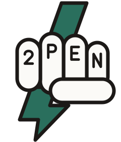
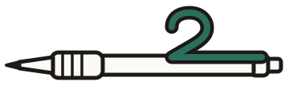

Brand · Marks
The knuckle fist with the bolt is the index-card sketch. The pen whose clip is a 2 is the green-marker sketch. The outlined 2 is the hinge of the name and scales down to a favicon. All are generated from one script so the geometry lives in one place.


Outlined above 32 px, solid below it so the counter stays open.
Keep one knuckle width (the height of the 2 on the first finger) clear on every side. Minimum size: 48 px tall on screen, 16 mm in print. Below that, use the 2.
Red means recording. The bolt is always green.
Scale it proportionally. Pick the fist or the 2 for tight spots.
2.6:1. On dark grounds the green is 400.
It punches straight at the viewer. Regenerate from build_marks.py.